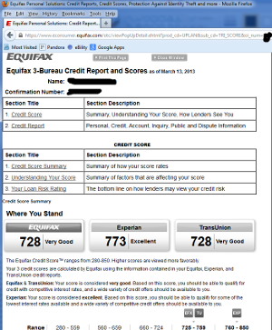
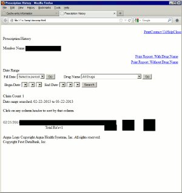
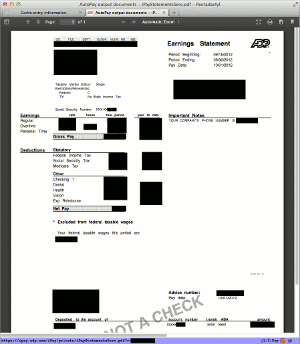
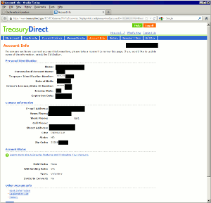
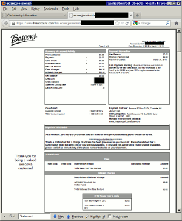
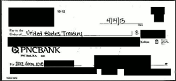

Most web browsers, historically, were cautious about caching content delivered over an HTTPS connection to disk—to a greater degree than required by the HTTP standard. In recent years, in response to the increased use of HTTPS for non-sensitive data, and the proliferation of bandwidth-hungry AJAX and Web 2.0 sites, some browsers have been changed to strictly follow the standard, and cache HTTPS content far more aggressively than before. HTTPS web servers must explicitly include a response header to block standards-compliant browsers from caching the response to disk—and not all web developers have caught up to the new browser behavior. ISE identified 21 (70% of sites tested) financial, healthcare, insurance and utility account sites that failed to forbid browsers from storing cached content on disk, and as a result, after visiting these sites, unencrypted sensitive content is left behind on end-users' machines.
Overview
Users often visit the same web pages more than once, such as checking a news site every day. While some of the page contents may change often, the vast majority of the page and associated resources (such as images) never change. To re-download this unchanged content on every visit of the page would be a waste of time and bandwidth. To avoid this, when a user accesses a web page the web browser caches (saves a copy of) most content locally on the user's machine. This content can either be saved in temporary memory (RAM), which is lost as soon as the user exits the browser, or on disk, which persists after the user exits the browser or reboots the computer. When a user visits a previous page a second time, the content is retrieved from cache instead of over the Internet. Memory caches are lost when the browser exits, so the browser uses the disk cache whenever possible.
Secure web sites use the HTTPS and SSL/TLS protocols to encrypt information as it travels over the Internet, to prevent an eavesdropper or man-in-the-middle from seeing or modifying the communication. Although there are no technical constraints preventing content sent over an encrypted connection from being decrypted and written to disk, it is logical to presume that if content is too sensitive to be sent over a network without encryption, then it may also be too sensitive to store unprotected on a hard drive. When HTTPS was first introduced, there was no standard, unambiguous way for a web server to mark content as too sensitive to store in cache. As a result, web browser authors created their own mechanisms for a web server to restrict disk caching [1]. Some browser authors chose to, by default, never write content transferred over HTTPS to disk [2], or did not disk cache content unless a server header explicitly allowed it (“opt-in”) [3], while others chose to write this content to the disk cache, unless a server header explicitly prohibited it (“opt-out”) [4].
In 1999, the HTTP/1.1 standard was published, which standardized the header [5] that a server must set to prevent content from being written to a disk cache. By that time, all web browser authors had already adopted either an opt-in HTTPS disk caching policy, or an opt-out policy with multiple, non-standard ways to opt out. Despite the new standard, web developers could continue to use the old, non-standard methods and they would continue to work only in the browsers that recognized them [1].
Between the release of Netscape Navigator 3.0 in 1996, and 2008, when Google Chrome was released, the only browser with a significant market share that used an “opt-out” HTTPS disk caching policy was Internet Explorer. Internet Explorer has always been very forgiving in determining a web server's intention that a response not be written to the disk cache. ISE identified four separate ways [1] that can a web developer can prevent a response from being cached to disk. Only one of those ways, the header Cache-Control: no-store, is actually standard [5].
Encrypted web servers (HTTPS) have higher overhead and lower performance than unencrypted servers due to the need to perform encryption, and in the past this overhead was much more pronounced. For this reason, many web sites used HTTPS only when absolutely necessary, such as for sending a password or credit card information. After the sensitive transaction was completed, the sites would switch back to an unencrypted connection. Two examples are Gmail, which transmitted e-mails over unencrypted connections until 2010 [6], and Facebook, which continued to use unencrypted connections until 2012 [7]. Since HTTPS was reserved for only the most sensitive information, an opt-in disk caching policy was a very reasonable design.
By 2011, many sites had begun using HTTPS even for non-sensitive content, and Mozilla Corporation recognized that the opt-in HTTPS disk caching policy in Firefox was introducing a performance penalty compared to other browsers, including Google Chrome, which uses an opt-out policy. As a result, Firefox 4.0 and all later versions use an opt-out HTTPS disk caching policy [8]. A Firefox 3.6 user would be unaffected by this issue, even when browsing HTTPS sites that fail to set the necessary header, but would become affected as soon as that user updated to Firefox 4 or later.
Online banking, which is among the most security-sensitive uses of a web browser, exploded in popularity in the early 2000s. This was a time when Internet Explorer had over 90% market share, and before Safari and Chrome even existed. Internet Explorer's only significant competitors at the time (Netscape 3.0 and later, Mozilla, and Firefox) either did not disk cache HTTPS content at all (unless a user manually modified a configuration parameter), or used an opt-in policy, and thus required no special treatment to prevent caching of encrypted bank pages. Many of the web sites that we tested responded with sufficient headers to prevent caching in all versions of Internet Explorer, all versions of Safari, and Firefox 3.6 and earlier, but not Firefox 4.0 and later, or any version of Chrome. We believe that ensuring that sensitive content is not cached on disk by the browser was a design goal in these web applications. While this anti-disk cache functionality worked correctly in the past, it no longer works in two of today's popular browsers: Chrome, and Firefox 4.0 and later. Since this has been an issue in Chrome since its release in 2008, and in Firefox since 2011, the maintainers of these sites do not appear to perform regression testing for this issue.
Today, Internet Explorer continues to follow the same HTTPS disk caching policy as it always has: enable disk caching by default, but allow four different ways to disable it. Google Chrome and Firefox, in contrast, enable disk caching by default, but allow only one way to prevent it—the one given in the standard, the header Cache-Control: no-store.
Google Chrome and Mozilla Firefox, together, now have over a 60% market share on non-mobile devices [9], but many web sites still use antiquated, non-standard methods to prevent disk caching of sensitive HTTPS content that only function in Internet Explorer.
Caching Policies by Browser
Disk caching of HTTPS-delivered web pages varies by web browser. Below are the policies of four browsers that we tested.
Internet Explorer. Microsoft Internet Explorer caches HTTPS-delivered content to disk, unless one or more of the following are present [1]:
- The HTTP header Cache-Control: no-store.
- The HTTP header Cache-Control: no-cache.
- The HTTP header Pragma: no-cache.
- The HTML tag <META HTTP-EQUIV="Pragma" CONTENT="no-cache">. Microsoft discourages the use of this method; it may not work properly for pages larger than 32 kilobytes [10].
Note that the Cache-Control header cannot be set using an HTML <META HTTP-EQUIV> tag. Additionally, Internet Explorer interprets some of these headers differently, depending upon whether the page was delivered using HTTPS or HTTP.
ISE verified that this behavior as described using the 32-bit version of Internet Explorer 10.0.9200.16576 on 64-bit Windows 7.
Firefox. Prior to version 4.0, Mozilla Firefox (and its predecessors, including Mozilla and Netscape) either never cache HTTPS pages to disk at all, or cache only pages sent with:
- The HTTP header Cache-Control: public.
Firefox contains a hidden browser preference,
browser.cache.disk_cache_ssl, that when set to true,
switches Firefox from the previous, cautious policy above, to a new policy that
strictly follows the HTTP standard, disk caching all content unless specifically
instructed not to do so by the server. In 2011, the default value of this preference
was switched from false to true [8]. As
a result, Firefox 4.0 and all later versions cache HTTPS-delivered content to disk,
unless the following is present:
- The HTTP header Cache-Control: no-store.
ISE verified that using the 32-bit version of Mozilla Firefox 3.6.28 on 64-bit Windows 7 (and earlier), HTTPS content is not disk cached unless the server sends the Cache-Control: public header. ISE verified that using the 32-bit version of Mozilla Firefox 21.0 on 64-bit Windows 7, Mozilla Firefox 21.0 on Mac OS X 10.7.5, and Mozilla Firefox 21.0 on Android 2.3.6, HTTPS content is disk cached unless the server sends the Cache-Control: no-store header.
Chrome. Google Chrome caches HTTPS-delivered content to disk, unless the following is present:
- The HTTP header Cache-Control: no-store.
ISE verified that using Google Chrome 27.0.1453.94m on Windows 7, and the Browser app in Android 2.3.6 (which is based on Chrome), HTTPS content is disk cached unless the server sends the Cache-Control: no-store header.
Safari. Apple Safari does not cache HTTPS-delivered content to disk, regardless of any headers sent by the server. ISE tested the mobile version of Safari on an iPad 2, and the HTTPS caching behavior was identical to the desktop version.
ISE verified that using Safari 6.0 (7536.25) on Mac OS X 10.7.5, and Mobile Safari on iOS 5.1.1, HTTPS content is never disk cached.
A word about private browsing modes. Virtually all web browsers now include a “private browsing” mode, that in addition to preventing browsing history from being retained, disables the disk cache entirely. While sufficient for a user to avoid this issue, we do not consider advising users to use private browsing to be a reasonable solution for several reasons. First, private browsing modes are not the default, and must manually be enabled by a user. Second, other aspects of private browsing, such as not retaining persistent cookies, break useful functionality in web sites, such as remembering usernames or remembering the computer to avoid answering security questions on each login. Third, since private browsing disables the disk cache entirely, it has negative side effects on the performance of the Internet as a whole, since even unencrypted HTTP content must be re-downloaded if the browser has been closed.
Site Survey
Methodology
ISE tested thirty secure, password-protected sites that displayed sensitive personal information in a web browser. This involved accessing SSL-protected websites as an authorized user, logging out of the site, and closing the Firefox browser. Then, ISE reopened the browser, placed it in offline mode, and checked the disk cache for entries containing sensitive data.
Initial Results
As of April 25, 2013, twenty-one of the thirty sites tested were not sending the Cache-Control: no-store header required by the HTTPS standard to prevent disk caching of sensitive data. Some were not sending any caching-related headers at all, while others were sending caching headers that prevent disk caching only in Internet Explorer, or other headers not relevant to web browser caches.
The following sites sent sensitive information with both of the headers Cache-Control: no-cache, and Pragma: no-cache, which prevent disk caching in Internet Explorer, but not Firefox or Chrome:
| Site | Sensitive Information |
|---|---|
| ADP | Full earnings statements, including names, addresses, the last four digits of the employee's social security number, and financial data |
| BGE | Customer names, addresses, account numbers, and balances |
| M & T Bank Wealthcare | Customer names, account numbers, and balances |
| Scottrade | Account numbers and balances |
| TreasuryDirect | Customer names, the last four digits of the account holder's social security number, addresses, and telephone numbers |
| Verizon Wireless | Call details |
Table 1. Sites sending sensitive information with both the headers Cache-Control: no-cache, and Pragma: no-cache, which only prevent disk caching in Internet Explorer.
The following sites sent sensitive information with the header Cache-Control: no-cache which prevents disk caching in Internet Explorer, but not Firefox or Chrome:
| Site | Sensitive Information |
|---|---|
| BB&T | Customer names, email addresses, the last four digits of account numbers, and account balances |
| Liberty Mutual | Customer names, policy numbers, property addresses, and policy limits |
| PayPal | Customer names, email addresses, addresses, and phone numbers |
Table 2. Sites sending sensitive information with the header Cache-Control: no-cache, which only prevents disk caching in Internet Explorer.
The following sites sent sensitive information with the header Cache-Control: private, which has no effect on whether or not a web browser caches the information to disk:
| Site | Sensitive Information |
|---|---|
| Allstate | Auto insurance policy documents |
| eBillity | Worker summary reports |
| eRenterPlan | Customer names, addresses, and telephone numbers |
Table 3. Sites sending sensitive information with the header Cache-Control: private, which has no effect on disk caching in web browsers.
The following sites sent sensitive information without any cache-related HTTP headers at all:
| Site | Sensitive Information |
|---|---|
| Argus Health | Customer names and pharmacy claims, including the names of prescription medications |
| Boscov's Charge Card | Full account statements, including the full card number |
| Equifax | Full credit reports and credit scores |
| GEICO | Customer names, addresses, the customer date of birth, and the last four digits of the customer's social security number |
| MetLife | Customer names, policy numbers, policy amounts, and beneficiary names |
| PNC Bank | Check images |
| T. Rowe Price | 401(k) balances |
| Toyota Financial | Customer names, addresses, account numbers, and VINs |
| Trade King | Account numbers and balances |
Table 4. Sites sending sensitive information without caching-related HTTP headers.
Below are screenshots of some of the data we recovered from the disk cache.

Figure 1.Credit report from Equifax.

Figure 2.Prescription history from Argus.

Figure 3.Earnings statement from ADP.

Figure 4.Account information from TreasuryDirect.

Figure 5.Boscov's Charge Card Account statement with account number.

Figure 6.Check image from PNC.
Updates
We notified each company by email to the security– or phishing–related email address, or when email was not available, using a web-based contact form. The following companies acknowledged our advisories with a non-automated response:
- Argus Health
- M & T Bank
- PayPal
The following companies have made at least some progress in correcting the issue:
- BB&T. The account summary page is now sending Cache-Control: no-store, but check images are still sent with inadequate protections.
Observations and Concerns
We believe that the amount of personal data that is currently being written to the disk cache when visiting these sites is alarming. It is important to note, however, the distinction between a user consciously selecting a "save to disk" option, e.g., to save a bank statement, and content silently being written to the disk cache without users' knowledge. Non-technical users likely believe that if, after visiting a site and viewing personal data, they logout and close their browsers, that their data will be safe. Our findings prove this assumption incorrect in 70% of the cases tested.
Based on the quantity of sites (twelve of twenty-one) that sent at least one cache-related header, even if it was not the one mandated by the standard to prevent disk caching, we do not believe that it is intended by these industries that this content be written to the disk cache. More significantly, the maintainers of these sites may erroneously believe that they have set the required headers to prevent disk caching, based on outdated and incorrect information published on the Internet. One tutorial [11] correctly states the purpose of all of these headers, but does not put them in the proper context with regard to HTTPS, stating “SSL pages are not cached (or decrypted) by proxy caches,” which, while true for proxies, does not address the behavior of browsers. An OWASP page [12] incorrectly asserts that “If a web page is delivered over SSL, no content can be cached.” When even the security community makes outdated and incorrect assumptions about this issue, it is unrealistic that more generally-focused web developers will do better.
Web browser authors, with the most striking example being Mozilla, seem unconcerned with shifting the responsibility of discretion as to which HTTPS pages are safe to disk cache to the server. A comment on the bug report involving the change to Firefox 4's SSL caching policy by a member of Mozilla Corporation's security team stated “Among sites that don't use cache-control:no-store, the correlation between "SSL" and "sensitive" is very low” [8]. Our findings show that this assertion does not hold when real-world sites are examined, even two years after the change.
The fact that the unencrypted, disk cached data is only stored on the user's personal machine should not be discounted. The possibilities for this information to be exposed are numerous: malware infections, theft of laptops and mobile devices, theft of physical backup media or compromise of “cloud” backup services, shared machines and user accounts, and of course, shared computers in libraries, hotels, and Internet cafes. An Intel-sponsored Ponemon Institute study estimated the cost of recovering from the loss or theft of a single laptop as $49,246 [13], and a Lookout Mobile Security study estimated that lost and stolen phones cost consumers more than $30 billion in 2012 [14].
Recommendations
To Web Developers and Web Framework Authors. Developers of web applications and web frameworks should audit all existing code to ensure that sensitive data is appropriately labeled with caching directives. Professionals in these fields must become more familiar with the fine details of the HTTP standard, and assume that browser software will always make performance vs. security trade-offs against security. Proper security assessments of sites containing sensitive information should be conducted regularly, and an examination of disk cached content across all supported browsers should be part of that assessment process.
To the Security Community. All existing guidance and advice in regard to the HTTPS caching issue should be revised to reflect the reality of the HTTP standard. Security professionals should be cautious in making assertions or recommendations based on working knowledge alone, and be sure to consult the relevant standards and perform testing to back up their beliefs.
To Web Browser Authors. In a time where security threats and identity theft are rampant, all browsers should adopt an opt-in only policy for caching sensitive data to disk; and further, users should have an easily accessible option to refuse any or all opt-in directives. At the very least, we recommend that browsers with a very strict opt-out HTTPS disk caching policy, such as Firefox and Chrome, consider interpreting the HTTP headers and meta tag introduced by Internet Explorer, as well. Internet Explorer has been disk caching HTTPS content for far longer than either of these browsers, so many sites seem to have been developed with IE-centric security assumptions in mind.
To End-Users. Users should make the following configuration changes, depending on each browser:
Internet Explorer. Internet explorer already abides by most web application attempts to prevent disk caching. To further restrict what can be cached, a user can open Internet Options, choose the Advanced tab, and under Security, check “Do not save encrypted pages to disk”. This option may have unwanted side effects, such as interfering with file downloads from HTTPS sites [4]. Alternatively, use InPrivate Browsing mode.
Firefox. Install our “HTTPS Caching Controller” Firefox add-on, which adds a toolbar button allowing disk caching of SSL content to be disabled or enabled at any time. This add-on works only on the desktop version of Firefox. Manually, or on the mobile version, navigate to
about:config, enter the preferencebrowser.cache.disk_cache_ssl, and double-click to switch the value fromtruetofalse. Alternatively, use Private Browsing mode.Chrome. ISE could not locate any settings in Chrome to easily limit disk caching of HTTPS requests. Instead, use Incognito mode.
Safari. Safari users (both desktop and mobile) need not take any action, since, as of this writing, Safari does not cache any content transferred over HTTPS.
In addition to taking these precautions, never log into account-related or other security-sensitive sites from a computer or other device you do not own and control.
Attribution and Acknowledgements
This research was conducted by Jacob Thompson of Independent Security Evaluators and directed by Stephen Bono. Jacob Holcomb, Kedy Liu, and Ali Jad Khalil made additional contributions.
References
[1] How to prevent
caching in Internet Explorer
Note: this page omits the fourth, standard method to prevent disk caching
(Cache-Control: no-store).
[2] SSL-Talk List FAQ, question 6.1.4
[3] Firefox ignores "Cache-Control: public" header on TLS connections
[4] Cannot Open Files on Secure Servers
[5] HTTP/1.1: Header Field Definitions
[6] China Syndrome: Gmail Now Defaults to Encrypted Access
[7] Facebook switches users to HTTPS for secure (slower) connection
[8] Should cache SSL content to disk even without Cache-Control: public
[10] "Pragma: No-cache" Tag May Not Prevent Page from Being Cached
[11] Caching Tutorial for Web Authors and Webmasters
[12] OWASP Application Security FAQ
[13] The Billion Dollar Lost Laptop Problem, page 2.
[14] Lookout Projects Lost and Stolen Phones Could Cost U.S. Consumers Over $30 Billion in 2012